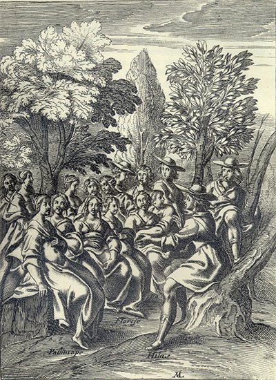

L'Astrée
d'Honoré d'Urfé
Deuxième partie
Livre 4

Gravure signée M(ichel Lasne)
Hylas s'adresse à une large audience.
Sont nommées Parthénopé (sic Palinice), Florice et peut-être Diane (II, 4, 193)
L'AstréeII, 4. Édition Vaganay**, 1925Gravure signée M(ichel Lasne)
Hylas s'adresse à une large audience.
Sont nommées Parthénopé (sic Palinice), Florice et peut-être Diane (II, 4, 193)
(Voir Illustrations)
Gravure signée Guélard et Gravelot
Florice conduite à ses noces s'évanouit devant
L'AstréeII, 4. Édition Vaganay**, 1925Gravure signée Guélard et Gravelot
Florice conduite à ses noces s'évanouit devant
Hylas à la fenêtre (II, 4, 257)
(Voir Illustrations)
Édition de 1610, p. 185.
Édition de Vaganay, p. 121.
Je me suis moqué bien souvent en ma pensée de ceux
qui blâment l'inconstance, et qui font profession d'en
être plus
ennemis, considérant qu'ils ne peuvent être tels qu'ils
se disent qu'ils ne soient eux-mêmes plus
inconstants que ceux qu'ils accusent de ce vice. Car
lorsqu'ils deviennent amoureux, n'est-ce pas de la
beauté, ou de quelque

Dorinde se moqua de vous
Quand elle vous tint ce langage,
Sachant bien qu'on peut sans outrage
Promettre toute chose aux fous.
Ou la vanité de votre âme
Vous fait vanter qu'elle l'a dit,
Pour montrer d'avoir du crédit
Auprès d'une si belle Dame.
Mais soit qu'elle ait fait ce serment
Pour chasser un fâcheux Amant,
Promettre est un doux artifice.
Et quand on l'en devrait punir,
Elle aimerait mieux le supplice
Que non pas un tel souvenir.
SONNET.
Serments amoureux.

Belle, de mes désirs vous êtes le trépas,
Et c'est vous toutefois que seule je désire,
J'en jure vos beaux yeux que le Soleil admire,
Et j'en jure mon cœur, surpris de vos appâts.
J'en jure vos douceurs, qui sont tout mon soulas,
J'en jure vos dédains, qui sont tout mon martyre,
J'en jure mes douleurs, témoins de votre empire,
J'en jure ces plaisirs qu'avoir je ne puis pas.
Voici la troisième qu'elle rencontra :

Quand vous verrez cette écriture, peut-être vous
souviendrez-vous d'en avoir vu autrefois, lorsque
vous aimiez celle qui vous écrit et que vous avez
tant offensée. Que s'il advient ainsi, jugez
η quelle est
l'amitié que je vous ai portée puisqu'après un si
grand outrage, elle me fait mettre la main à la
plume pour vous faire savoir l'état où se trouve
celle que vous avez tant aimée, et qui vous aime
encore plus que toutes les choses du monde en dépit
de toutes les injures que vous lui avez faites.
Sachez
Or je faisais semblant de n'avoir point reçu sa
lettre afin qu'elle ne crût pas que ce fussent ses
paroles mais mon amour seulement qui me faisait
revenir vers elle, parce que, si j'eusse été poussé
par ses prières, il eût semblé que j'eusse eu moins
d'affection qu'elle, ce que je ne voulais pas qu'elle
pensât. Quand elle reçut ma lettre, elle eut
beaucoup de contentement de savoir que je l'aimais,
et ne fut peu en peine
η de la sienne, voyant que je ne
l'avais point reçue. Elle me récrivit donc et
me fit savoir qu'elle m'avait déjà averti du moyen
qu'il fallait tenir pour l'exempter de la misère qui
lui était préparée. Et parce qu'elle craignait que
sa lettre ne fût perdue, elle me la redisait
encore. Mais sans attendre sa réponse, je fis
semblant de partir de la ville, feignant d'y être
contraint pour ne pouvoir soutenir
la vue de ce mariage. Et afin qu'elle le crût mieux, je donnai ordre que presque en même temps une autre lettre des miennes lui fût portée. Elle était telle :

Si je pouvais vous envoyer ma vie dans ce papier
aussi bien que la vérité de mon intention, je ne me
plaindrais pas de l'injustice du ciel qui m'a
destinée à manquer à mon Amour ou à mon devoir.
Demain sera le dernier jour de ma vie, si pour le
moins on doit appeler mort ce qui ravit toute espèce
de contentement. Si Hylas veut

Celui qui n'est au monde que pour notre supplice s'en va demain hors de la ville. Si vous venez, tout
le soir sera nôtre. Le reste du
temps que je passe éloignée de ce que j'aime, je
ne dis pas qu'il soit à nous.
cette fille m'ayant ouvert me donna la lettre que Florice m'écrivait, et sans dire un seul mot me referma la porte si promptement que je ne l'en sus empêcher. Et parce qu'il faisait obscur, et que je craignais qu'en heurtant je fusse ouï de quelqu'autre, après avoir attendu quelque temps pour voir si elle rouvrirait, je m'en allai avec une grande appréhension qu'il n'y fût arrivé quelque accident. Et quand je fus en mon logis, j'avais une impatience incroyable d'attendre de la clarté pour lire la lettre qui m'avait été donnée. Enfin je vis qu'elle était telle :
C'est la plus cruelle ennemie que tu auras jamais qui t'écrit maintenant, pour t'avertir que ni
Dorinde, ni toi, n'avez eu assez de méchancetés
pour la faire mourir, et que le Ciel me laissera
assez de vie pour me venger de tous deux. Cependant,
oublie mon nom, comme tu as perdu le souvenir des
faveurs que je t'ai faites.


Livre 3

Livre 5
Référence électronique :
document.write('"'+document.title.substr(0, document.title.indexOf("-")-1)+'". '+"Dernière mise à jour : "+ExtractDate(document.lastModified)+".")Deux visages de L'Astrée.
©2005-2020 E. Henein.
URL :
var today = new Date();
document.write(document.URL +
"<br>Consulté le : " + today.toLocaleDateString("fr-FR") + ".");
var _gaq = _gaq || [];
_gaq.push(['_setAccount', 'UA-19288475-1']);
_gaq.push(['_trackPageview']);
(function() {
var ga = document.createElement('script'); ga.type = 'text/javascript'; ga.async = true;
ga.src = ('https:' == document.location.protocol ? 'https://ssl' : 'http://www') + '.google-analytics.com/ga.js';
var s = document.getElementsByTagName('script')[0]; s.parentNode.insertBefore(ga, s);
})();
Deux visages de L'Astrée.
©2005-2019 Eglal Henein. Creative Commons 4 
Édition critique de la première partie de L'Astrée (1607, 1621)
mise en ligne le 9 avril 2007
Édition critique de la deuxième partie de L'Astrée (1610, 1621)
mise en ligne le 10 octobre 2010
Édition critique de la troisième partie de L'Astrée (1619, 1621)
mise en ligne le 1er novembre 2014
Édition critique de la quatrième partie de L'Astrée (1624)
mise en ligne le 15 janvier 2019
document.write("Dernière mise à jour : "+ExtractDate(document.lastModified))